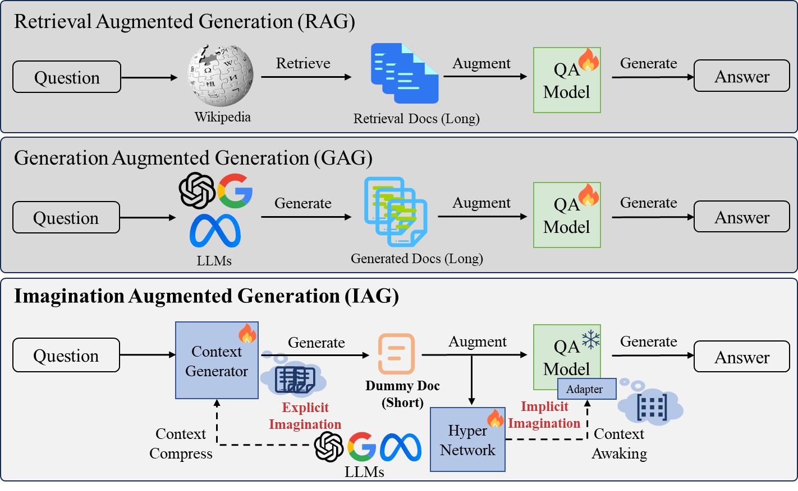
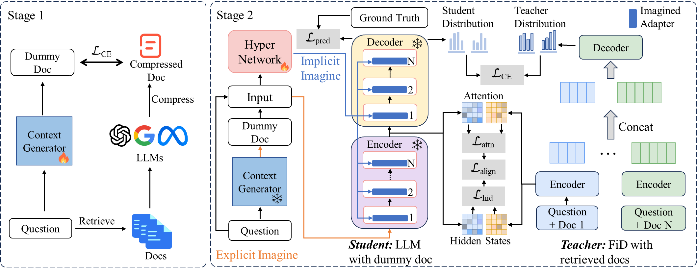
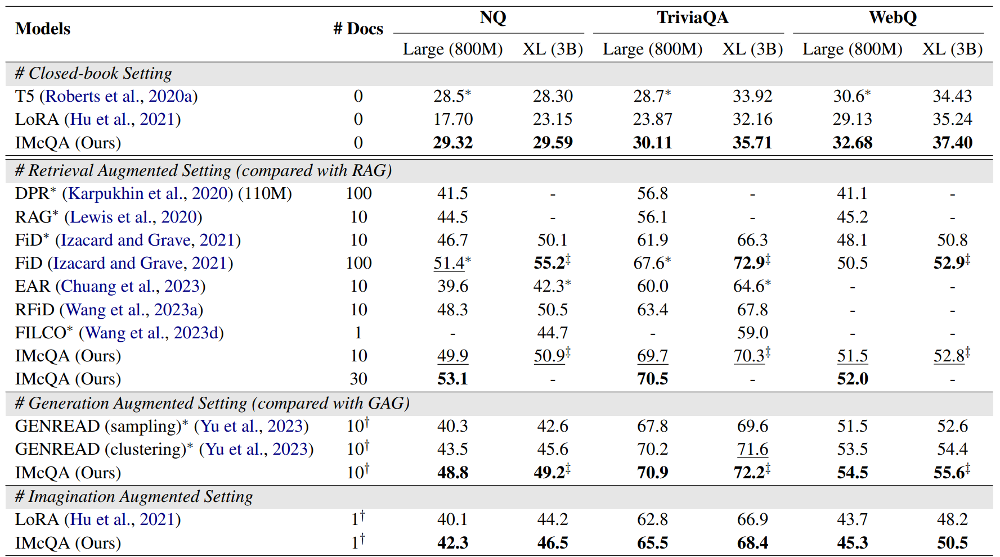
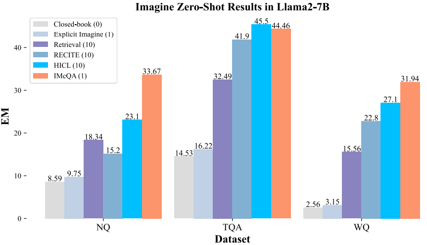
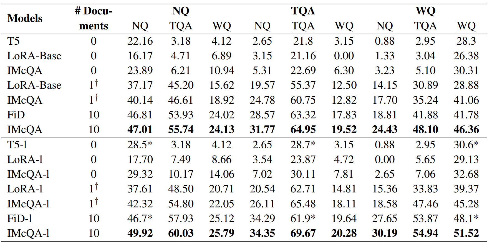

Retrieval-Augmented-Generation and Gener-ation-Augmented-Generation have been proposed to enhance the knowledge required for question answering over Large Language Models (LLMs). However, the former relies on external resources, and both require incorporating explicit documents into the context, which increases execution costs and susceptibility to noise data. Recent works indicate that LLMs have modeled rich knowledge, albeit not effectively triggered or awakened. Inspired by this, we propose a novel knowledge-augmented framework, Awakening Augmented Generation (IAG), which simulates the human capacity to compensate for knowledge deficits while answering questions solely through imagination, thereby awakening relevant knowledge in LLMs without relying on external resources. Guided by IAG, we propose an imagine richer context method for question answering (IMcQA). IMcQA consists of two modules: explicit imagination, which generates a short dummy document by learning from long context compression, and implicit imagination, which creates flexible adapters by distilling from a teacher model with a long context. Experimental results on three datasets demonstrate that IMcQA exhibits significant advantages in both open-domain and closed-book settings, as well as in out-of-distribution generalization.
Comparison with RAG and GAG approaches
Compared with RAG and GAG, the proposed IAG eschews external resources, generates a shorter context (explicitly imagination) and creates flexible adapters (implicitly imagination) for each question.

Explicit and Implicit Imagination modules
IMcQA comprises two main modules. Explicit imagination with long context compression learns to imagine a short dummy document. And implicit imagination with the hypernetwork models' hidden knowledge that learns a shared knowledge feature projection across questions. The hypernetwork is trained to generate lightweight LoRA modules, aiming to align the question and the internal knowledge. Besides, there is long context distillation in training, which learns the teacher's rich representations to compensate for missing knowledge in imagination.

Results on NQ, TQA, and WQ datasets
Results of our main supervised setting experiment on NQ, TQA, WQ datasets. The backbone model is T5-large(800M) and T5-xl(3b).

Results of our main zero-shot setting experiment on NQ, TQA, WQ datasets. The backbone model is Llama2-7b and Llama2-13b.

Results of our OOD results.

@inproceedings{liao2025awakening,
title={Awakening Augmented Generation: Learning to Awaken Internal Knowledge of Large Language Models for Question Answering},
author={Liao, Huanxuan and He, Shizhu and Xu, Yao and Zhang, Yuanzhe and Liu, Shengping and Liu, Kang and Zhao, Jun},
booktitle={Proceedings of the 31st International Conference on Computational Linguistics},
pages={1333--1352},
year={2025}
}